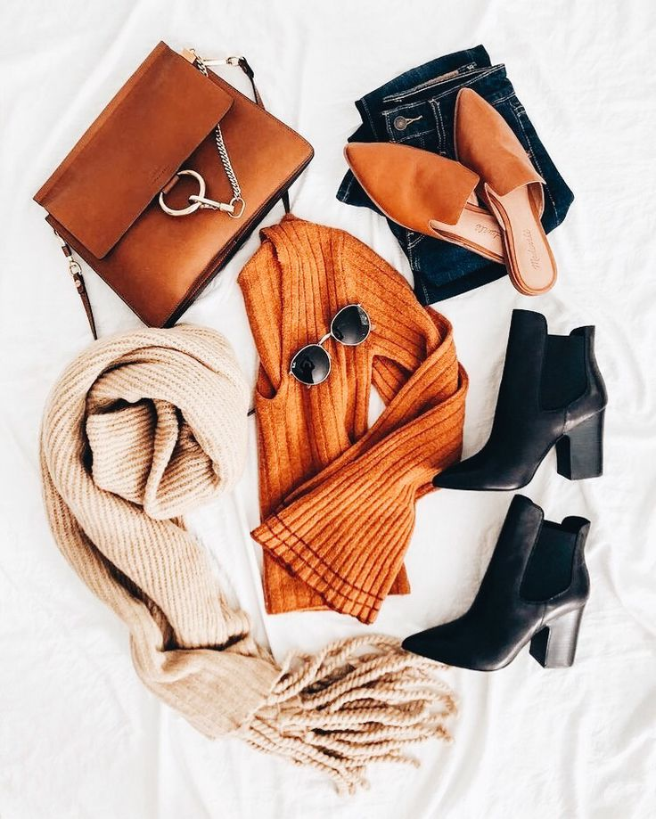
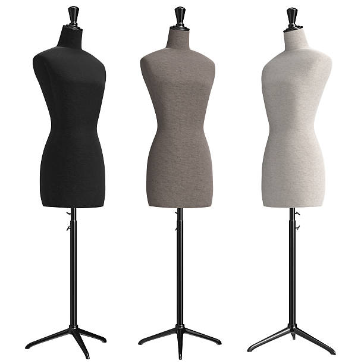

Featured Look of the Week

Hover over the image above to reveal full color! Layering simple staples with bold denim creates a effortless look.
Everyday Style & Thrift Trends
NEW POSTS DAILY
Hover over the image above to reveal full color! Layering simple staples with bold denim creates a effortless look.

Hover over this box to test the CSS Scale Transform effect.

Hover over this box to test the CSS Translate Transform effect.